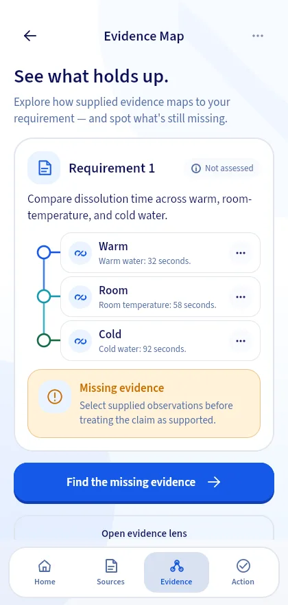

Start with your briefFrame the assignment and research question you are working on.
A workspace for student research
Make a claimthe evidence can carry.
Bring your research question, sources, evidence notes, and synthesis into one clear path—with the limits and next steps still in view.
Start with your own brief. You choose the sources and write the conclusions.

Keep evidence connectedLink your own source notes to themes and claims.
You stay in controlChoose sources, write the synthesis, and decide what to revise.
Know the boundariesKeep limitations and next steps alongside each claim.
Traceable reasoning
The answer matters. So does how you got there.
The current manual project path is designed for directed literature synthesis. You enter and review your sources, connect evidence notes to your synthesis and claims, then keep scope, limitations, and next steps visible. Evidrilo does not find or verify sources.
Your project pathIllustrative structure
- 01Brief and questionWhat are you trying to understand?
- 02Sources and evidence notesWhat did you choose to examine?
- 03Synthesis and claimWhat do your linked notes support?
- 04Limits and next stepWhat remains uncertain or useful to do?
A guide to the project structure, not a screenshot or completed student project.
- Brief
- Sources
- Evidence
- Synthesis
- Claim
- Next step
Explore alternatives
Take away one fact. What can you still say?
Remove an observation from this synthetic tablet-dissolution example and watch the comparison narrow. It is a practice case, separate from a student-created research project.
Supplied caseTablet dissolution · water temperature
What the available facts can say3 of 3 available
In this supplied case, dissolution took 32 seconds in warm water, 58 seconds at room temperature, and 92 seconds in cold water.
All three supplied conditions are available for comparison. The description stays inside this case.
Interactive explainer based on Evidrilo's synthetic case. It does not evaluate your own work.
Know your boundaries
A stronger answer knows where to stop.
In this synthetic example, one trial per condition supports a case-specific comparison—not a universal rule.
Overstated claimGoes beyond the facts
“Warm water always makes tablets dissolve faster.”
One trial per condition cannot establish an always-true result.
Evidence-aligned claimWithin this case
“In this supplied trial, the tablet dissolved in 32 seconds in warm water and 92 seconds in cold water.”
The comparison names the observations and stays within their limit.
Same case. Clearer boundary. A more useful next step.
See the guided case flowA complete workspace
A place for every part of the thinking.
Keep the brief, source records, evidence notes, synthesis themes, claims, limitations, and next steps together in a manual project you can return to.
Projects are stored on this device in the current build. Cross-device sync is not available.
My research projectDirected literature synthesis
Research questionWritten in your own words
Sources and evidenceEntered and reviewed by you
Synthesis and claimsLinked to evidence notes
Limits and next stepsKeep the boundary visible
Illustrative project structure · not a live application screen
See the facts before you interpret them.
Enter the sources you chose and keep your evidence notes beside your synthesis.
Keep the reasoning connected.
Link evidence notes to themes and claims so you can revisit the path behind them.
Make the limits part of the answer.
Record what your evidence cannot establish and a practical next step.
Case practice
See the reasoning in action.
These app screens show a separate synthetic case: inspect observations, trace a requirement, and keep a claim within its evidence boundary.

Inspect the supplied observations.
Review the facts in this synthetic case and select which ones are relevant to the conclusion you want to describe.
Trace the requirement to its evidence.
See which supplied observations relate to the task in this example and keep the intended conclusion in view.

Keep the claim inside its boundary.
State a claim and its limitation, then use case-bounded feedback to make one purposeful revision.

Write with confidence
You keep the pen. The evidence stays in view.
In this guided case, you write the first claim, review feedback linked to supplied facts, then make one revision in your own words.
Your first draftStudent-written
“Warm water made the tablet dissolve fastest.”
A useful observation, still missing its limit.
Anchored feedbackOne next step
Name the one-trial limit before making the comparison sound certain.
LIMIT-TRIAL-01 Each condition was measured once.
Your revisionStill your words
“In this supplied case, warm water took 32 seconds, compared with 58 and 92 seconds. Each condition was measured once.”
A claim with its boundary in view.
Illustrative wording from the synthetic case. The app checks selected facts and rules; it does not write the student's answer.
Change the evidence yourselfStudent-led by design
Your research stays yours.
The project workspace organizes student-entered sources, evidence notes, synthesis, and claims. Structure checks do not judge research quality or scientific truth.
Student-entered sources
You choose, record, and review sources; Evidrilo does not search for or verify them.
Visible evidence links
Connect evidence notes to synthesis themes and claims so you can revisit where your statements came from.
Checks without grades
Project checks flag missing fields or links. The separate guided case uses bounded checks against its supplied facts.
Frequently asked questions
Good questions deserve clear answers.
What the current Evidrilo build does—and where its limits are.
What can I do in a project?
The current manual path focuses on directed literature synthesis: frame a brief and question, record sources and evidence notes, connect them to synthesis themes and claims, and note limitations and next steps.
Can I preview before creating an account?
Yes. Get Started is a skippable synthetic walkthrough; it does not create a project or save learning activity. You can create and manage local projects without an account. Sign in for M0 case practice and account-bound features; signing in does not upload local projects.
Can I sync or back up a project?
Project data stays on this device; cloud sync is not available in the current build. Markdown, PDF, and DOCX reports, structured CSV, and .evproj import/export exist in development code, but device file handling still needs verification before you rely on them as a backup.
Does Evidrilo find sources or provide live AI?
No. You enter and review your own sources; there is no literature search or DOI verification. Reviewed catalog templates are not yet selectable, and Project AI is not live because its provider remains disabled.
Will Evidrilo write or grade my research?
No. You write the synthesis and claims. Project checks flag missing fields or links; they are not quality scores, scientific verdicts, or academic grades. The separate guided case gives bounded feedback only on its supplied facts and rules.

Keep the path from evidence to claim in view.
Explore the student-led project workflow, or try the separate synthetic case example.